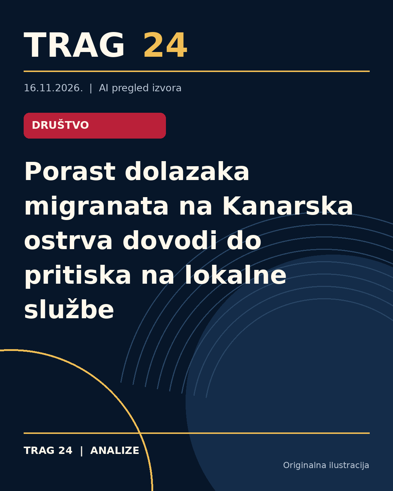

Porast dolazaka migranata na Kanarska ostrva dovodi do pritiska na lokalne službe

ŠTA SE DOGODILO
U jednom danu na Kanarska ostrva stiglo je gotovo 1.500 migranata, što je najveći broj koji je zabeležen u istoj vremenskoj jedinici od 2020. godine. Nastao je pritisak na prihvatne i hitne službe, posebno na manjim i manje naseljenim ostrvima.
HRONOLOGIJA
Španska obalska straža spasila je 1.488 ljudi iz 14 plovila u subotu, dok je prema najnovijim izveštajima u protekla dva dana na ostrva stiglo gotovo 2.200 migranata. Vanredno stanje zbog migrantske situacije proglašeno je početkom nedelje usled intenzivnijih dolazaka. Najviše ljudi iskrcalo se na ostrvo El Ijero, koje ima oko 12.000 stanovnika.
ŠTA NAVODE IZVORI
Kurir navodi da je broj migranata u jednom danu bio rekordan od novembra 2020. godine, a u jednoj čamci bilo je 240 ljudi, uklјučujući žene i decu. N1 dopunjava informacije ističući da je reč o ruti sa zapadne Afrike koja je jedna od najsmrtonosnijih, kao i da su migranti često primorani da biraju duže i opasnije trase da bi izbegli kontrolne službe. Organizacije poput Crvenog krsta pružaju migrantima neophodnu pomoć nakon dolaska.
ŠTA JE POTVRĐENO
Potvrđeno je da je u subotu spaseno oko 1.488 migranata u 14 plovila, da je broj dolazaka usled porasta u poslednjim nedeljama stvorio dodatni pritisak na lokalne službe, i da je kanarska ruta jedan od glavnih pravaca dolazaka migranata u Španiju. Takođe, zabeležen je rekordni broj prispelih za jedan dan od 2020. godine.
ŠTA NIJE POTVRĐENO
Nije potvrđeno koliko je ukupno migranata trenutno smešteno na ostrvima niti kakve su dugoročne posledice povećanog pritiska na lokalnu infrastrukturu i službe. Nije potvrđeno da li postoje konkretni aranžmani za smanjenje broja dolazaka ili međunarodni planovi za rešavanje situacije.
ŠTA OSTАJE OTVORENO: Ostaje nejasno kako će se situacija dalje razvijati i kakve mere će vlasti preduzeti u narednom periodu. Takođe, nije poznato kakva je tačna perspektiva migranata po pitanju daljeg kretanja ili integracije, kao ni potpuna statistika o polnoj starosnoj strukturi migranata koji stižu na ostrva.
Izvori
- https://www.kurir.rs/planeta/10162657/na-kanarska-ostrva-za-jedan-dan-stiglo-skoro-1-500-migranata
- https://n1info.rs/svet/skoro-2200-migranata-stiglo-je-na-kanarska-ostrva-u-protekla-dva-dana/
Ova analiza je pripremljena uz pomoć veštačke inteligencije na osnovu javno dostupnih izvora. Navodi izvora nisu nužno nezavisno potvrđeni.